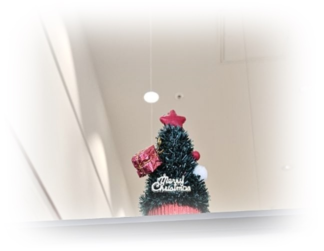

아이(3세)는 부모의 바쁜 일정으로 할머니집 주변에서 살고, 할머니가 주양육자. 아이는 신경질적, 장난감 던지기, 편식이 심하고 할머니 집에서 잠을 자고 엄마와의 애착 형성에 어려움이 있음. 어린이집에서 친구들이 다가와 관심을 보이면 두 손으로 밀고, 울기 등 함께 놀지 않고, 혼자 우두커니 있음. 퇴근하면 할머니댁에서 저녁밥을 먹고 딸이 할머니와 잔다고하여 아들만 데리고 집으로 감. 할머니는 갈수록 문제를 나타내는 아이에게 꾸중늘 자주하여 고쳐야 한다는 주장함. 딸이 엄마는 자신이 엄격하게 자란 것은 이해되지만 자녀에게는 사랑을 많이 주고 싶은데 왜 좋아하지 않은지 고민이 많다고 함.

1. 행동 특성
1) 불안정한 애착 형성
엄마보다 할머니에게 더 의존하는 양상은 주 양육자와의 정서적 일관성이 부족하거나, 엄마의 양육 참여가 제한적일 때 자주 나타납니다. 낯선 환경(어린이집, 엄마 집)에서는 불안을 보이며 안정감의 대상을 찾는 행위(할머니 찾기, 울기)로 반응합니다.
2) 낯가림과 회피적 반응
또래의 관심이나 접촉을 피하며 눈을 가리는 행동은 자기 보호적 반응으로, 불안할 때 감각을 차단하여 안정감을 확보하려는 시도로 해석됩니다.
2. 정서적 문제 배경
1) 양육자 간 역할 혼란
할머니와 엄마가 교차 양육하는 환경은 아이에게 애착 인물의 일관성 부족으로 작용합니다. 아이는 “어디가 내 집인지, 누가 나를 돌보는 사람인지”에 대한 심리적 혼란을 경험할 수 있습니다.
2) 불안정 애착 유형의 초기 징후
분리 시 불안이 크고, 엄마와 함께 있을 때조차 편안함보다 긴장을 보이는 것은 불안-회피형 혹은 양가형 애착 형성 과정의 특징입니다.
3) 자기 효능감 부족
새로운 활동을 회피하거나 교사에게 의존하는 모습은 실패나 부정적 평가에 대한 두려움을 내포합니다. 이는 양육 환경에서 “완벽해야 한다”, “틀리면 혼난다”와 같은 무의식적 메시지가 전달되었을 가능성을 시사합니다.
4) 감각·정서 과민성
또래 접촉 시 눈을 가리거나 울음으로 반응하는 것은 감각적 방어(특히 시각·청각 자극 과민)가능성이 있으며, 이는 정서적 안정감 부족과 연계되어 나타납니다.
3. 지도 및 해결 방법
1) 안정적 애착 대상의 일관성 유지
가능한 한 일정 기간 동안 양육 주체를 일관되게 유지하고, 돌봄의 구조를 예측 가능하게 구성해야 합니다.
예: “오늘은 엄마가 데려다주고, 할머니가 데리러 올 거야.”처럼 구체적 예고로 불안을 완화합니다.
2) 분리 상황의 점진적 노출
갑작스러운 분리 대신, 짧은 시간 동안 엄마와 떨어졌다가 다시 만나는 경험을 반복하여 ‘엄마는 다시 돌아온다’는 신뢰감을 형성하도록 돕습니다.
3) 감정 명료화 언어 사용
“할머니 보고 싶었구나.” “지금은 엄마랑 있어서 조금 낯설지?”처럼 감정을 이름 붙여주는 언어 반응이 중요합니다.
이는 아이가 자신의 감정을 인식하고, 언어로 표현하는 능력을 키우는 데 도움을 줍니다.
4) 놀이 기반 자율성 강화
쉬운 과제부터 “혼자 해볼까?” “엄마가 옆에서 볼게.” 등의 지지적 문장으로 점진적 자기 주도성을 유도합니다.
성공 경험 후 즉각적으로 “스스로 했네! 멋지다!”라는 격려 및 칭찬을 자주하여 정서적 강화를 제공합니다.
이 아이는 불안정한 애착과 낮은 정서적 자기조절력의 초기 양상으로 볼 수 있습니다. 그러나 사회적 관계를 완전히 회피하지 않고, 교사의 권유 시 활동에 참여한다는 점에서 정서적 회복 가능성이 높습니다. 가정과 어린이집이 협력하여 일관된 애착 경험과 안정된 일과 구조를 제공할 경우, 3~6개월 내 점진적인 안정화가 기대됩니다.
2025.05.24 - [상담] - 3세 아이의 정서 조절은 맞춤형 훈육과 놀이로 해결
3세 아이의 정서 조절은 맞춤형 훈육과 놀이로 해결
3세 아들은 소리에 민감하게 반응하고 일상 속에서 짜증을 자주 표현함. 임신 중인 어머니는 아들이 혼자서 장난감을 가지고 잘 놀기다가 자기 뜻대로 되지 않거나 감정이 상하면 울고 떼를 쓰
think-sis.co.kr